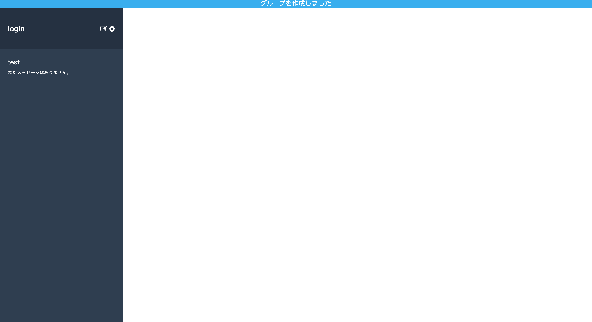
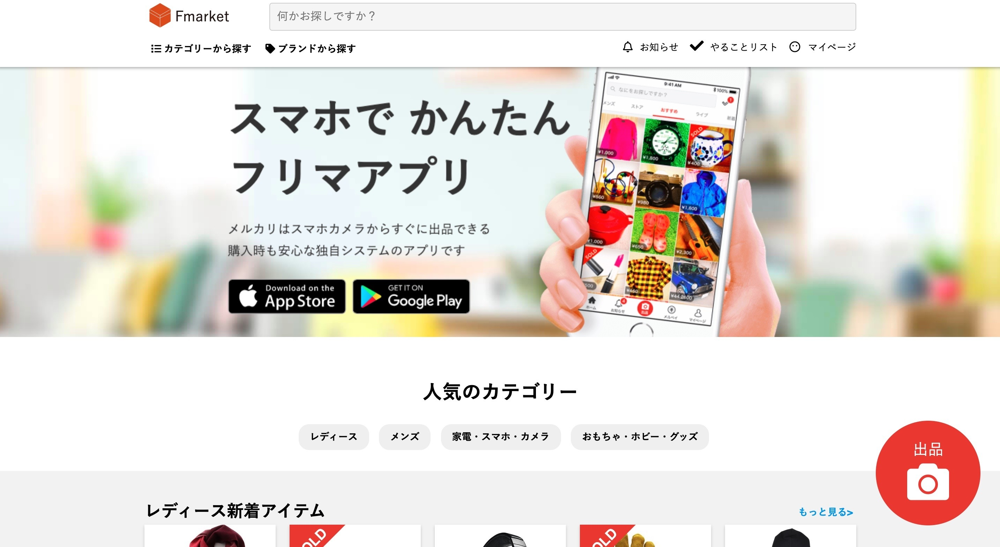

Portfolio
作成したWEBアプリケーションやWEBサイトなどを掲載中。
Chat-Space

はじめて世界に公開したアプリケーション。Chat-Spaceは複数人によるチャット機能を搭載したwebアプリケーション。基本機能はRuby on Railsを使い、非同期の処理はJavaScript、ログ管理はGitHubで開発を行ってます。WEBサーバーはAWSを使って構築。アプリを見る >>
FMarket（フリーマーケットサイト）

チーム開発を初体験。FMarketは既存サイトを参考にしたフリーマーケットサイト。4人で１チームを組み、Githubでバージョン管理しながら模擬的に期限を設けてアジャイル開発を行う。AWSでサーバー構築。※一部、機能不完全な部分あり。サイトを見る >>